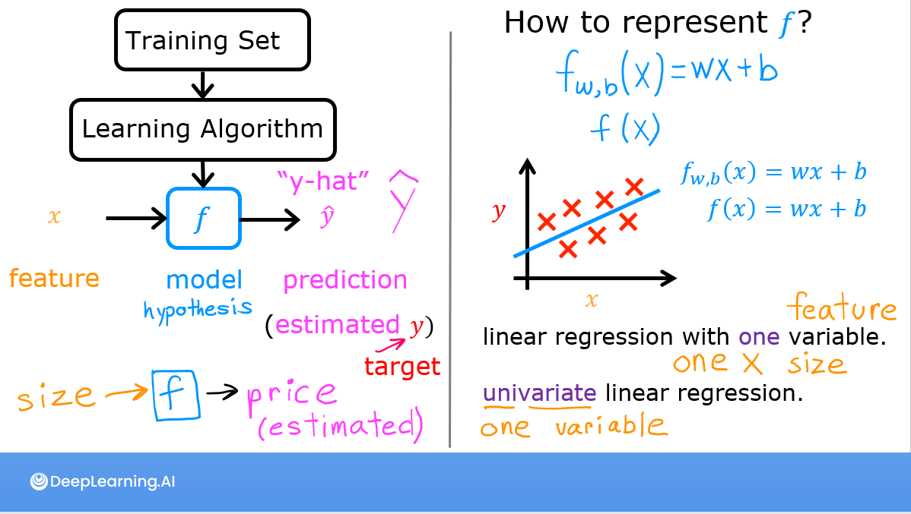

Machine Learning là gì?
Thay vì viết luật bằng tay, ta cho máy xem thật nhiều ví dụ và để nó tự rút ra quy luật.
Định nghĩa
“Field of study that gives computers the ability to learn without being explicitly programmed.” — Arthur Samuel, 1959
Một định nghĩa chặt hơn của Tom Mitchell (1997): một chương trình học từ kinh nghiệm E đối với tác vụ T và thước đo hiệu năng P, nếu hiệu năng trên T (đo bằng P) tăng lên nhờ E. Ví dụ với bộ lọc thư rác: T = phân loại email, E = hàng nghìn email đã gắn nhãn “spam / không spam”, P = tỉ lệ phân loại đúng.
Lập trình truyền thống và machine learning khác nhau ở chỗ cái gì là đầu vào, cái gì là đầu ra:
| Đầu vào | Đầu ra | |
|---|---|---|
| Lập trình truyền thống | Dữ liệu + luật (do người viết) | Kết quả |
| Machine learning | Dữ liệu + kết quả mong muốn | Luật (mô hình) |
Các nhánh chính
Học có giám sát (supervised learning)
Dữ liệu huấn luyện có sẵn “đáp án” \(y\) cho mỗi đầu vào \(x\). Mô hình học ánh xạ \(x \to y\) để dự đoán cho đầu vào mới.
- Hồi quy (regression): \(y\) là số thực, vô số giá trị có thể. Ví dụ: diện tích nhà → giá nhà (chương 2–5).
- Phân loại (classification): \(y\) thuộc một tập hữu hạn lớp. Ví dụ: kích thước khối u → lành / ác tính (chương 6), ảnh chữ viết tay → chữ số 0–9 (chương 8–9).
Học không giám sát (unsupervised learning)
Chỉ có \(x\), không có \(y\). Thuật toán tự tìm cấu trúc trong dữ liệu.
- Phân cụm (clustering): gom khách hàng, bài báo, gen… thành nhóm giống nhau (chương 13).
- Phát hiện bất thường (anomaly detection): tìm giao dịch gian lận, máy móc hỏng (chương 14).
- Giảm chiều (dimensionality reduction): nén dữ liệu nhiều chiều mà giữ thông tin chính (chương 15).
Hệ gợi ý & học tăng cường
Hệ gợi ý (recommender systems) là một trong những ứng dụng mang lại nhiều giá trị thương mại nhất (chương 16). Học tăng cường (reinforcement learning) không có đáp án đúng cho từng bước, chỉ có phần thưởng; tác tử tự thử–sai để học chiến lược (chương 17).
Các mô hình ngôn ngữ lớn (LLM) như GPT hay Claude được huấn luyện chủ yếu bằng học tự giám sát: nhãn được tạo tự động từ chính dữ liệu (ví dụ: che một từ rồi đoán nó, hoặc đoán từ tiếp theo). Về mặt kỹ thuật đây vẫn là bài toán có giám sát (có \(x\) và \(y\)) nhưng không cần con người gán nhãn — nhờ vậy dùng được lượng dữ liệu khổng lồ trên internet.
Thuật ngữ cơ bản

- Training set — tập dữ liệu dùng để huấn luyện.
- Feature (đặc trưng) \(x\) — biến đầu vào: diện tích, số phòng, tuổi nhà…
- Target (mục tiêu) \(y\) — giá trị cần dự đoán.
- Model / hypothesis \(f\) — hàm ánh xạ \(x\) sang \(\hat y\).
- Parameters (tham số) \(w, b\) — những con số mô hình học được.
- Hyperparameters (siêu tham số) — những thứ ta chọn trước khi học: \(\alpha\), \(\lambda\), số lớp, số nơ-ron…
Quy trình một dự án ML
- Xác định bài toán: dự đoán cái gì, đo thành công bằng gì?
- Thu thập & làm sạch dữ liệu.
- Huấn luyện mô hình, bắt đầu bằng mô hình đơn giản (baseline).
- Đánh giá & chẩn đoán: bias hay variance? cần thêm dữ liệu hay thêm đặc trưng? (chương 11)
- Lặp lại bước 2–4.
- Triển khai & giám sát: dữ liệu thực tế thay đổi theo thời gian (data drift), mô hình cần được theo dõi và huấn luyện lại.
Vòng lặp “chọn kiến trúc → huấn luyện → chẩn đoán” càng nhanh thì dự án càng tiến nhanh. Phần lớn thời gian của kỹ sư ML không nằm ở viết thuật toán mới mà ở dữ liệu và chẩn đoán lỗi.
Công cụ: Python & Jupyter
Lab đầu tiên giới thiệu môi trường Jupyter Notebook: các ô markdown để ghi chú và ô code để chạy Python. Phím tắt quan trọng nhất là Shift+Enter (chạy ô và chuyển xuống ô dưới).
# f-string: cách in giá trị gọn gàng dùng xuyên suốt các lab
w, b = 200, 100
print(f"w = {w}, b = {b}, dự đoán cho x=1.2: {w * 1.2 + b}")Đi từng bước qua lab
Lab đầu tiên chỉ để làm quen với Jupyter, nhưng ba thao tác này sẽ lặp lại trong mọi lab sau:
- Mở notebook và phân biệt hai loại ô. Ô markdown chứa chữ và công thức; ô code chứa Python. Nhấp đúp vào ô markdown để xem mã nguồn của nó.
- Chạy từng ô theo thứ tự từ trên xuống. Shift+Enter chạy ô hiện tại rồi nhảy xuống ô dưới. Biến tạo ở ô trên mới dùng được ở ô dưới, nên chạy lộn thứ tự là nguồn lỗi
NameErrorphổ biến nhất. - In kết quả bằng f-string.
print(f"{w:0.2f}")định dạng số với 2 chữ số thập phân; các lab dùng cách này để in chi phí, tham số sau mỗi vòng lặp. - Khi kết quả lạ: menu Kernel → Restart & Run All chạy lại toàn bộ notebook từ đầu với trạng thái sạch.
| Sản phẩm | Bài toán | Loại |
|---|---|---|
| Ứng dụng gọi xe dự đoán thời gian đến (ETA) | số phút → số thực | Hồi quy |
| Ngân hàng chặn giao dịch thẻ đáng ngờ | gian lận / không | Phân loại hoặc phát hiện bất thường |
| Sàn thương mại điện tử gợi ý “có thể bạn cũng thích” | xếp hạng sản phẩm cho từng người | Hệ gợi ý |
| Chuỗi cửa hàng chia khách thành nhóm để chạy khuyến mãi | không có nhãn sẵn | Phân cụm |
| Robot kho hàng tự học đường đi | chỉ có phần thưởng khi giao đúng | Học tăng cường |
Cách tự xếp loại một bài toán: hỏi “có đáp án đúng cho từng ví dụ không?” (có → supervised), rồi “đáp án là số hay là nhóm?” (số → hồi quy, nhóm → phân loại).
Từ ghi chú Notion
Bốn nhóm thuật toán chính của khoá: supervised learning, unsupervised learning, recommender system và reinforcement learning.
Supervised learning là học từ “đáp án đúng”. Một số cặp đầu vào → đầu ra:
| Đầu vào (x) | Đầu ra (y) | Ứng dụng |
|---|---|---|
| spam? (0/1) | lọc thư rác | |
| câu tiếng Anh | câu tiếng Tây Ban Nha | dịch máy |
| hình ảnh, dữ liệu radar | vị trí các xe khác | xe tự lái |
- Regression: dự đoán một con số, có vô số giá trị đầu ra.
- Classification: dự đoán lớp/nhóm, chỉ có một số ít giá trị đầu ra (hai hoặc nhiều lớp).
Unsupervised learning là tìm cấu trúc thú vị trong dữ liệu không có nhãn:
- Clustering: gom các điểm giống nhau lại với nhau.
- Anomaly detection: tìm các điểm dữ liệu bất thường.
- Dimensionality reduction: nén dữ liệu bằng ít con số hơn.
Nguồn Notion: Machine Learning
Deep Learning là một nhánh của ML dùng mạng nơ-ron nhiều lớp, mạnh nhất với ảnh, văn bản, âm thanh. Phần II giới thiệu mạng nơ-ron; Phần IV (chương 18) đi sâu bằng PyTorch và hướng dẫn chọn ML cổ điển hay DL cho bài toán của bạn (chương 26).
Ghi nhớ
- Supervised: có nhãn \(y\) → hồi quy (số thực) hoặc phân loại (lớp rời rạc).
- Unsupervised: không có nhãn → phân cụm, phát hiện bất thường, giảm chiều.
- Tham số do mô hình học; siêu tham số do người chọn.
Tự kiểm tra
Dự đoán nhiệt độ ngày mai là bài toán gì?
Hồi quy có giám sát — \(y\) là số thực, và có dữ liệu lịch sử với nhiệt độ thật.
Gom các bài báo cùng chủ đề trên Google News thuộc loại nào?
Học không giám sát (phân cụm): không ai gán sẵn nhãn chủ đề, thuật toán tự nhóm bài theo nội dung.
Learning rate α là tham số hay siêu tham số?
Siêu tham số — ta chọn nó, gradient descent không tự học ra nó.